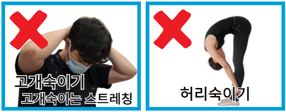
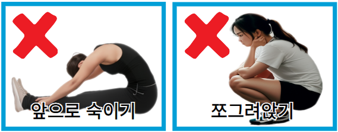

[Habits and Postures to Avoid]
Poor posture directly disrupts spinal alignment. During treatment, small irritations can lead to severe pain, so please be careful.


❌ Primary Postures to Avoid
1. Bending neck/back down / 2. Slumping / 3. Sitting cross-legged
** Do not maintain these for more than 15 minutes.
Daily Precautions
1. Alcohol
Drinking within 2 weeks after pain subsides can cause a sudden relapse.
2. Hiking & Uphill Paths
Increases the risk of re-misalignment. Please enjoy these after full recovery.
3. Long Drives
Always use a cushion and take breaks for stretching.
4. Sitting for Over 20 Mins
Use a cushion in early stages and practice pelvic rolling. Avoid crossing legs.
5. Avoid Excessive Tension
Obsessing over "proper posture" creates tension. We handle the correction; you just relax and follow our guidelines.
Proper posture completes itself naturally once the spine is corrected.